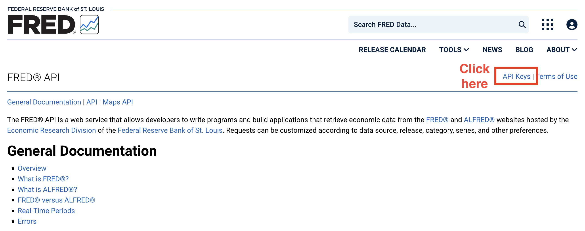
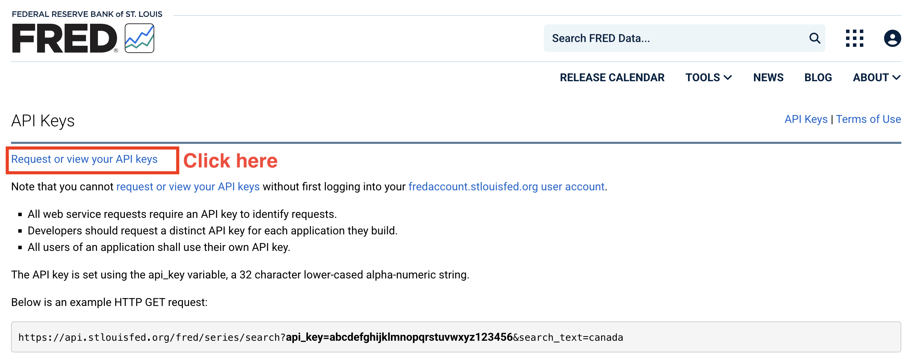
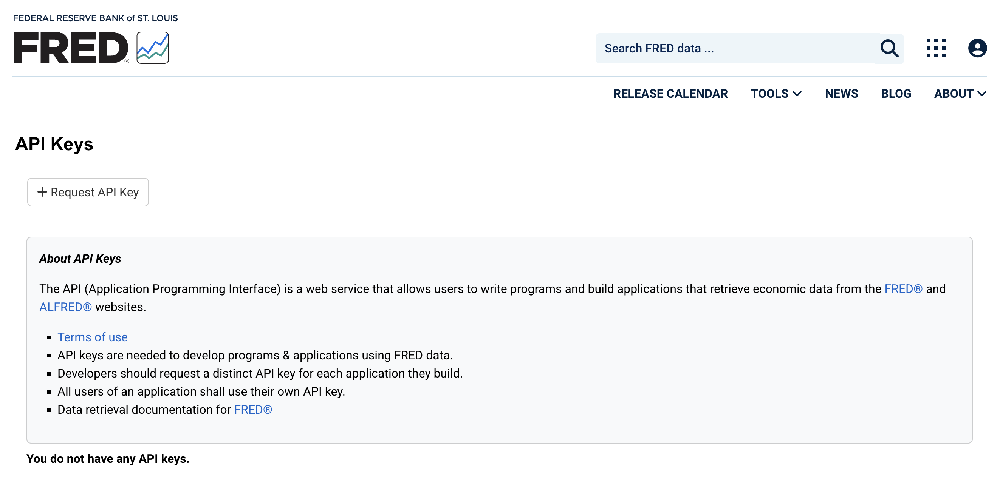
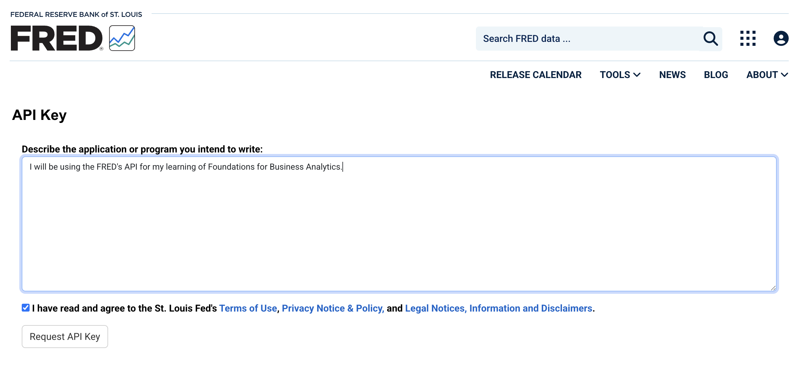
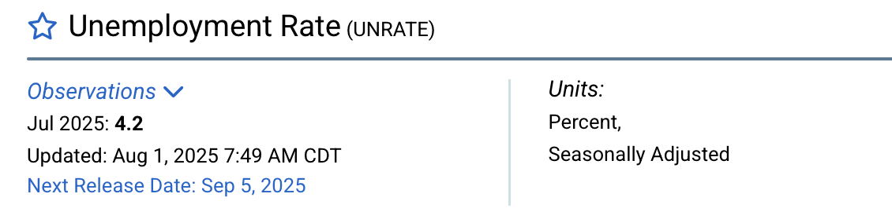

# Install the packages if needed:
# install.packages(c("fredr", "dplyr", "ggplot2", "lubridate"))
# Load packages
library(fredr) # Package for Using FRED API
library(dplyr)
library(ggplot2)
library(lubridate)Tutorial 7: Obtaining Macroeconomic Data through FRED
TipLearning Goals
By the end of this tutorial, you should be able to:
- Get familiar the workflow of using API to acquire data
- Acquire macroeconomic data from the U.S. Federal Reserve Economic Data through web-based platform and API
- Clean and visualize macroeconomic data
- Identify trends and patterns in macroeconomic data and interpret findings
- Critically evaluate data limitations and challenges (e.g., seasonality, outliers, etc.)
The Business Challenge
The macroeconomy is the stage on which every business decision plays out. No business, whether a global tech giant, a local café, or even a freelance consultant, operates in a vacuum. Shifts in GDP growth, spikes in inflation, surges in unemployment, or sudden changes in interest rates ripple through the economy and ultimately shape outcomes for each microeconomic entity.
Over the past few decades, we have seen how powerful these forces can be. The 2008 global financial crisis reshaped credit markets and consumer demand for years. The COVID-19 pandemic disrupted supply chains, accelerated digital adoption, and left lasting changes in labor markets. Even today, firms must navigate the challenges of inflationary pressures, shifting interest rate policies, and geopolitical uncertainty.
For data analysts, we cannot answer micro-level business questions without accounting for the macroeconomic backdrop. In this session, you will step into the role of a macro-aware business analyst. Specifically, you will:
Obtain real macroeconomic data on key indicators like GDP, unemployment, and inflation.
Visualize and explore trends across different time periods, spotting patterns between macroeconomic indicators.
To carry out these tasks, we need high-quality and reliable macroeconomic data. The Federal Reserve Economic Data (FRED), managed by the Federal Reserve Bank of St. Louis, is one of the most widely used platforms by academics, policymakers, and industry analysts alike. It offers thousands of time series on the U.S. and global economy.
We will learn two ways to interact with FRED:
Directly through the FRED website, which allows quick searches and visualization.
Programmatically through the FRED API, which lets us pull large datasets directly into our analysis tools and integrate them into reproducible workflows.
By the end of this workshop, you’ll not only gain hands-on experience with macroeconomic data, but also develop an appreciation for how the “big picture” shapes the smaller decisions businesses face every day.
Prepare these Exercises before Class
Prepare these exercises before coming to class. Plan to spend 30 minutes on these exercises.
Exercise 1: Visualize and Download Macroeconomic Data Directly from the FRED Website
FRED offers an easily accessible web-based platform for users to visualize and download macroeconomic data directly from their website (https://fred.stlouisfed.org/).
Search in FRED and find the pages of the following data:
- Real Gross Domestic Product (GDP)
- Core Consumer Price Index (CPI)
- Unemployment Rate
Read through each page and think about the following questions (recap of Macroeconomics):
- What does “core CPI” mean here? How does it differ from normal CPI?
- What is the relation between CPI and inflation?
Exercise 2: Preparing for Obtaining Data through APIs
In addition to the web-based interactive platform, FRED offers APIs to those who would like to acquire data through programs and in large batches (see the page for details: https://fred.stlouisfed.org/docs/api/fred/).
To prepare for our practices during the workshop, make sure you have applied for the API key for FRED before the workshop (VERY IMPORTANT!). Below are the detailed steps
- Visit the FRED’s API webpage and click the link to “API Keys.”

- Request your own API key:

- You will see a pop-up window asking for signing in. Click “create new account” at the top and you will get to the following page:
Use your Uni email address to register. For the question “In what context do you use FRED?”, choose “Student.”
Once you finish your registration, you will be automatically directed to the API request page. Click “+ Request API Key”.

- In the next page, briefly describe why you are applying for the API access.

You will now see your API key on the page. MAKE SURE that you copy and store the key safely. Do not share your API key with others, as doing so may block your access to the FRED API.
If you forget your API key, you can retrieve it from FRED using your registered email and log-in credentials.
Exercise 3: Set Up FRED API and Acquire Unemployment Data
NoteTasks
Skim the user manual of the FRED API (https://fred.stlouisfed.org/docs/api/fred/) and the package
fredr(https://cran.r-project.org/web/packages/fredr/vignettes/fredr.html).Set up FRED API in your program.
Use
fredrto search for the ID of unemployment rate data.Download unemployment rate data from 1990 to 2024 using the FRED API.
(a) Set Up the FRED API
After obtaining the API key for FRED, let’s connect to the API and download the data we need.
- Make sure that you have all required packages loaded.
fredris the package we need for getting access to the FRED API.
- We need to tell the program your API key (i.e., the log-in credentials for your R program) using the function
fredr_set_key().
# Assign your API key to a variable "api_key"
api_key <- "YOUR_API_KEY"
# Set API Key
fredr_set_key(api_key)- We are now connected to the API and ready for data acquisition.
(b) Extract data using fredr()
fredr() is the function we are going to use to extract data from FRED.
This function comes with several arguments:
data <- fredr(
series_id = "SERIES ID", # Replace with the Series ID in FRED
observation_start = , # The start date of extracted data
observation_end = # The end date of extracted data
)series_idis the ID of the data series you would like to retrieve from FRED.observation_startspecifies the starting date of the data. Note that this value needs to be in the date format. We can useas.Date(YYYY-MM-DD)to generate dates. If this value is not specified, the function will retrieve the data back to the earliest available period.observation_endspecifies the starting date of the data. If this value is not specified, the function will retrieve the data until the most recent period.
TipWhat is
as.Date()
as.Date() is a base function in R that generates or converts variables to date variables. Dates and time stamps are unique data formats that require additional work (more about this topic in the next chapter).
- By default,
as.Date()converts strings in “YYYY-MM-DD” into corresponding dates and store the value as the date format. For example,as.Date("2025-09-10")delivers a date value corresponding to September 10, 2025. as.Date()can also deal with other date expressed in alternative ways as long as you specify the date style accordingly. For example,as.Date("10/09/2025", format = "%d/%m/%Y")andas.Date("Sep 10, 2025", format = "%b %d, %Y")also give you the same date value in R.
In fredr(), the values for observation_start = and observation_end = must be in the date format. You need to make sure to input date values for these two arguments.
NoteGet Series IDs
Each series of data in FRED has a unique ID. There are two ways to find the IDs:
- You can see the series ID on its pages on the FRED’s website
- Use the embedded search function in
fredrto get the IDsfredr_series_search_text()is the function for you to search by key words and find series IDs for the data you need.- Simply put the key words (with quote marks) in the function to do the search
- Filter the output and keep only titles and corresponding IDs
fredr_series_search_text("TEXT HERE")
# Select and display the results with two columns: Series ID and title of data
fredr_series_search_text("TEXT HERE")[YOUR_CODE](c) Retrieve Data
Once you get the ID for the unemployment rate data, download the unemployment data from 1990 to 2024. Note that fredr() plays nicely with the tidyverse and you can directly apply data wrangling skills you have learned so far.
unrate <- YOUR_CODE(
series_id = "YOUR_CODE",
observation_start = as.Date("1990-01-01"),
observation_end = as.Date("2024-12-31")
) %>%
YOURCODE(date, unrate = value)
# Keep the date column and the unemployment rate (rename as "unrate")(d) Visualize Inflation and Unemployment Data
Inflation has become a major concern in the macroeconomy. Since 2020, large-scale monetary expansions and government stimulus have driven inflation sharply higher, making it a central topic of discussion. In this exercise, you’ll get to use the FRED API to pull real economic data and calculate inflation yourself.
(d1) Retrieve the Core Consumer Price Index (all items excluding food and energy) during 1990 and 2024 from FRED.
(d2) Inflation is often measured as the changes in consumer price index (CPI). Here, we are going to calculate YoY changes in core CPI.
TipCalculate YoY (year-over-year) Changes
When calculating changes in macroeconomic data (as well as other data evolving over time), we tend to focus on YoY changes. The major reason is that many economic indicators are strongly affected by seasons. Comparing July to June (MoM) or Q4 to Q3 (QoQ) may reflect seasonal swings rather than true economic trends. If we focus on YoY changes, such seasonal variations will be cancelled out.
The tidyverse makes it easy for us to calculate YoY changes in a variable. As the CPI data is monthly, to calculate YoY changes, we simply need to calculate the changes in the value from month t-12 to t.
To do this in R, we need to - Sort the data by date in the ascending order - Use lag() to “look backwards in the data”. lag() lets you grab the value in previous rows within the same column so you can compare it to the current one. - lag(x, 1): value from 1 row earlier - lag(x, 3): value from 1 row earlier (useful if your data is monthly and you want last quarter’s value) - lag(x, 12): value from 12 rows earlier (useful if your data is monthly and you want last year’s value) - You may need additional data ahead of your desired sample period so that the first few observations are non-missing. - For example, if you want to calculate inflation rate as of 1990-01-01, you need to keep your CPI data back to 1989-01-01 so that you can calculate YoY changes for 1990-01-01. - If you only have CPI data starting from 1990-01-01, the inflation rate for 1990-01 to 1990-12 will be missing, as their is no denominator for the calculation of YoY changes/growth.
Here is the code and you need to fill in necessary information
# Calculate inflation
inflation <- YOUR_CODE(
series_id = "CPILFESL",
observation_start = as.Date("1989-01-01"), # One year ahead for lag operation
observation_end = as.Date("2024-12-31")) |>
YOUR_CODE(date, cpi = value) |>
arrange(date) |>
YOUR_CODE(inflation = (cpi / lag(cpi, 12) - 1) * 100) |>
filter(!is.na(inflation)) # Remove missing values(d3) Plot unemployment rates and inflation from 1990 to 2024 in one single graph.
p1 <- ggplot() +
# Inflation line
YOUR_CODE(
data = inflation,
aes(x = date, y = inflation, color = "Inflation (%)"),
linewidth = 1
) +
# Unemployment line
YOUR_CODE(
data = unrate,
aes(x = date, y = unrate, color = "Unemployment Rate (%)"),
linewidth = 1
) +
labs(
title = "Inflation and Unemployment Rate (1990 - 2024)",
x = NULL, y = "Percent", color = NULL
) +
scale_x_date(date_breaks = "2 years", date_labels = "%Y") +
theme(axis.text.x = element_text(angle = 45, hjust = 1)) +
theme_minimal(base_size = 12) +
theme(legend.position = "top")
p1(e) Recession Periods
Economic recessions indicate that the whole economy is in a bad shape. The National Bureau of Economic Research defines economic recessions as a period when there is a significant decline in economic activities (https://www.nber.org/research/business-cycle-dating). According to their thresholds for the depth, diffusion, and duration of economic recessions, there are certain periods defined as recession periods. FRED integrates NBER’s recession period data into its database and allows us to extract the data using the API.
(e1) Use the FRED API to get access to the U.S. recession data (series_id ="USREC").
# US recessions data: 1 = during recession, 0 = otherwise
usrec <- fredr(series_id = "USREC",
YOUR_CODE = YOUR_CODE("1990-01-01"),
YOUR_CODE = YOUR_CODE("2024-12-31")) |>
YOUR_CODE(date, rec = value) |>
arrange(date)(e2) (Challenge yourself) The data from FRED is at the month level, showing whether a month is in recession or not. Use data wrangling tools you have learned from this subject to convert the monthly recession data into a data at the recession level (i.e., each row represents one recession). For each recession, we need two columns: start showing the start month of a recession, and end showing the end month of a recession.
TipTry before seeing this part
The code below is an application of data wrangling tools as well as logical operations (True and False, as well as the operations for logical values). No pressure if you cannot write this chunk independently - make sure you are able to understand each line.
recession_period <- usrec |>
mutate(
rec = (rec == 1),
# Convert "rec" into a logical variable (true/false) for next line.
start_flag = rec & !lag(rec, default = FALSE)
# Mark the start month of recession
) |>
filter(rec) |>
group_by(grp = cumsum(start_flag)) |>
summarise(
start = min(date),
end = max(date),
.groups = "drop"
) |> select(start, end)(e3) In the plot generated from (d3), add shaded areas to indicate recession periods.
p1 + geom_rect(
data = recession_period,
aes(xmin = start, xmax = end, ymin = -Inf, ymax = Inf),
fill = "grey75", alpha = 0.25, inherit.aes = FALSE
)(e4) Is there any patterns for unemployment rates and inflation during the recession periods? How do you explain the pattern(s)?
In-Class Exercises
You will discuss these exercises in class with your peers in small groups and with your tutor. These exercises build from the exercises you have prepared above, you will get the most value from the class if you have completed those above before coming to class.
Exercise 4: Seasonal Adjustment for Unemployment Data
When you retrieve the unemployment data from FRED using the series tag, UNRATE, you obtain seasonally adjusted unemployment rate.

In this exercise, we are going to get a deeper understanding of seasonal adjustment by comparing seasonally adjusted and unadjusted unemployment rate.
(a) Retrieve Data
Search using the FRED API (or the FRED’s website) to obtain tags for both seasonally adjusted and unadjusted unemployment rate.
Use
fredrto acquire both seasonally adjusted and unadjusted unemployment rate data in the period “2020-01-01 to 2024-12-31.”
# Unemployment rate (seasonally adjusted)
unrate_sa <- YOUR_CODE(
YOUR_CODE = "YOUR_CODE",
observation_start = "YOUR_CODE",
observation_end = "YOUR_CODE"
) %>% select(YOUR_CODE)
# keep date and unemployment rate (adjusted), rename it as "unrate_sa"
# Unemployment rate (seasonally unadjusted)
unrate_usa <- YOUR_CODE(
YOUR_CODE = "YOUR_CODE",
observation_start = "YOUR_CODE",
observation_end = "YOUR_CODE"
) %>% select(YOUR_CODE)
# keep date and unemployment rate (unadjusted), rename it as "unrate_usa"(b) Visualize Unemployment Rates
Plot the two series of data in the same plot with time as the horizontal axis and unemployment rate (%) as the vertical axis. Discuss (1) how the two lines differ from each other and (2) which one is more useful?
ggplot() +
YOUR_CODE(data = unrate_sa,
aes(x = YOUR_CODE, y = YOUR_CODE,
color = "Seasonally Adjusted (%)")) +
YOUR_CODE(data = unrate_nsa,
aes(x = YOUR_CODE, y = YOUR_CODE,
color = "Non Seasonally Adjusted (%)")) +
labs(
title = "Unemployment Rate (Adjusted vs. Unadjusted)",
x = "Year-Month", y = "Percent", color = NULL
) +
scale_x_date(date_labels = "%Y-%m",
date_breaks = "3 months") + # Set up date labels for x-axis
theme_minimal(base_size = 12) +
theme(axis.text.x = element_text(angle = 45, hjust = 1)) +
# Avoid text labels from overlapping with each other
theme(legend.position = "top")(c) Seasonal Adjustments
Although you are not required to master the recipe and the algorithms that the FRED uses to adjust seasonality, you may use the two series (adjusted and unadjusted) to reverse-engineer the seasonal adjustments made to the data.
(c1) Merge seasonal adjusted and unadjusted unemployment rates and calculate the adjustment made to the unadjusted number.
# Merge two series of data and
# generate a new variable "adjustment" for the adjustment made
adjustment <- YOUR_CODE(c2) Visualize the pattern of seasonal adjustments
ggplot(YOUR_DATA, aes(x = YOUR_VARIABLE, y = YOUR_VARIABLE)) +
YOUR_CODE() +
# Add a dashed line = 0
geom_hline(yintercept = 0, color = "red", linetype = "dashed") +
labs(
title = "Seasonal Adjustments Made to Unemployment Rates (%)",
subtitle = "UNRATE – UNRATENSA",
x = "Year-Month", y = "Seasonal Adjustment (%)"
) +
scale_x_date(date_labels = "%Y-%m", date_breaks = "3 months") +
theme_minimal(base_size = 12) +
theme(axis.text.x = element_text(angle = 45, hjust = 1))(d) Discuss your Findings
Do you observe any seasonality in the unemployment rate data? What would be the possible causes of the seasonality?
Why is seasonal adjustment important when working on unemployment data?
Exercise 5: Okun’s Law
You may have learned the Okun’s Law from ECON10003 (Introductory Macroeconomics). This is an important relation for us to understand the relationship between economic output and unemployment.
NoteDefinition: Okun’s Law
Okun’s Law is a relation observed by Arthur Okun that links changes in the unemployment rate to changes in a country’s real gross domestic product (GDP). It states that there is a negative correlation between changes in unemployment rate and changes in real GDP: a rise in the unemployment rate by a certain percentage generally corresponds to a fall in real GDP by a larger percentage. For example, a 1% increase in unemployment often correlates with a 2% to 3% decrease in real GDP.
In this exercise, we are going to visualize the Okun’s Law using the macroeconomic data obtained from FRED. Here is our roadmap:
(a) Obtain Data
Set up the API and use it to obtain real Gross Domestic Product (GDP) and seasonally adjusted unemployment rate data from 1990-01-01 to 2024-12-31.
# Load packages
library(fredr) # Package for Using FRED API
library(dplyr)
library(ggplot2)
library(lubridate)
# Assign your API key to a variable "api_key"
api_key <- "YOUR API KEY"
# Set API Key
fredr_set_key(api_key)# Real GDP Data
gdp <- YOUR_CODE(
series_id = "YOUR_ID",
observation_start = as.Date("1989-01-01"), # One-year ahead for lag operation
observation_end = as.Date("2024-12-31")
) %>%
YOUR_CODE(date, gdp = value)
unrate <- fredr(
series_id = "UNRATE",
observation_start = as.Date("1989-01-01"), # One-year ahead for lag operation
observation_end = as.Date("2024-12-31")
) %>%
YOUR_CODE(date, unrate = value)(b) Frequency of Data
Take a quick look at the data, are the two data share the same frequency? Can you propose some solutions to this situation?
(c) Variable Calculation
(c1) Calculate YoY growth (in %) of real GDP (Hint: be careful about the number of periods for your lag operation).
# Calculate YoY GDP Growth
gdp_growth <- gdp %>%
YOUR_CODE(date) %>%
YOUR_CODE(gdp_growth = 100 * (gdp / lag(gdp, YOUR_NUMBER) - 1))
# Calculate the GDP growth relative to the same quarter in the previous year(c2) Convert monthly unemployment rate data into quarterly by calculating quarterly average unemployment rate. Calculate the changes in unemployment rate relative to the previous quarter.
# Convert to Quarter Unemployment Rates and Calculate changes
unrate_qtr <- unrate %>%
# Use the first month (Jan, Apr, Jul, Oct) to represent each quarter
YOUR_CODE(quarter = floor_date(date, "quarter")) %>%
group_by(YOUR_OBJECT) %>%
summarize(
unrate = YOUR_CODE(unrate),
.groups = "drop") %>%
rename(date = quarter) %>% # for easier merge in following steps
YOUR_CODE(date) %>%
YOUR_CODE(unrate_chg = unrate - lag(unrate))(d) Visualize the Okun’s Law
Merge the changes in unemployment rates and real GDP in one single dataset, use ggplot() to create a scattered plot showing the relation between changes in unemployment rates (on the horizontal axis) and changes in real GDP (on the vertical axis).
# Merge data
okun <- YOUR_CODE(YOUR_OBJECT, YOUR_OBJECT, by = "YOUR_VARIABLE") %>%
filter(!is.na(unrate_chg) &!is.na(gdp_growth) )
# Scatter Plot
scatter_plt <- ggplot(YOUR_OBJECT, aes(x = YOUR_OBJECT, y = YOUR_OBJECT)) +
geom_point(color = "steelblue", alpha = 0.7) +
geom_smooth(method = "lm", se = FALSE, color = "darkred") +
labs(
title = "Okun’s Law Visualization",
x = "Change in Unemployment Rate (%)",
y = "Change in Real GDP (%)"
) +
theme_minimal(base_size = 12)(e) Quantify the Relation
The fitted line provides with us a rough idea of the relation between changes in unemployment and real GDP. However, it is difficult to spot the exact slope of the fitted line in the graph. As Okun’s Law suggests, a 1% increase in unemployment often correlates with a 2% to 3% decrease in real GDP. We would like to confirm this quantitative relation using the data from FRED. To achieve our goal, we need to do a simple linear regression to obtain the exact value of the slope. In R, we can use the built-in method lm to fit a linear regression model. Once the model has been fitted, coefficient estimates will be stored in our assigned object. We can use the function coef() to get a list of numbers representing the intercept and the slope.
# Slope of fitted line
line_fit <- lm(gdp_growth ~ unrate_chg, data = okun)
coef(line_fit)
# Equation (Just print it out in a string format)
line_equation <- paste0("ΔGDP = ",
round(coef(line_fit)[1], 2), " + ",
round(coef(line_fit)[2], 2), " × ΔUnemp")
# Print out the equation
line_equation
NoteWhat if our replication is inconsistent with the Okun’s Law?
- Check if everything is correct in our program (always necessary and important).
- The sample is different: Okun’s Law is based on data decades ago, whereas we are using recent decades. This may suggest that Okun’s Law no longer holds (?).
- Is there anything odd in the scattered plot?
(f) Eliminate Outliers (Extreme Values)
As you can see from the scattered plot in (d), there are a few outliers to the right of the graph (almost 10% unemployment rate). These points are due to the outbreak of COVID-19 in early 2020, when many people became jobless in a night because of lockdowns.
Okun’s law describes a general relation between changes in unemployment and GDP. It may not apply to such extreme cases as the COVID-19 outbreak. Additionally, such observations in the data will largely affect our inferences: it will affect the shape of the fitted line as well as the slope significantly. Hence, we need to get rid of these extreme cases (“outliers”) from our sample when we are interested in obtaining a generalizable conclusion.
There are many techniques dealing with outliers in data. We are going to adopt a simple and straightforward approach - trimming. By trimming the data, we drop observations with extremely large (small) values from the sample to eliminate their influence on our results and inferences. In common practice, we trim the sample at the 1^{st} and the 99^{th} percentiles, meaning that one observation is dropped if it has a value larger (smaller) than the 99^{th} (1^{st}) percentile of the data.
# Remove the outliers
okun_trim <- okun |>
filter(
between(gdp_growth,
quantile(gdp_growth, 0.01, na.rm = TRUE),
quantile(gdp_growth, 0.99, na.rm = TRUE)
),
between(unrate_chg,
quantile(unrate_chg, 0.01, na.rm = TRUE),
quantile(unrate_chg, 0.99, na.rm = TRUE)
)
)(g) Okun’s Law without Outliers
After removing outliers from the data, let’s do the plot again:
# Plot again
ggplot("FILL IN THE BLANK HERE") +
labs(
title = "Okun’s Law Visualization without Outliers",
x = "Change in Unemployment Rate (%)",
y = "Change in Real GDP (%)"
) +
theme_minimal(base_size = 12)Again, let’s take a look at the slope. Does it look consistent with the Okun’s Law?
# Fitted Line after Trim
line_fit <- YOUR_CODE(gdp_growth ~ unrate_chg, data = okun_trim)
YOUR_CODE(line_fit)
# Equation
line_equation <- paste0("ΔGDP = ",
round(coef(line_fit)[1], 2), " + ",
round(coef(line_fit)[2], 2), " × ΔUnemp")
line_equation